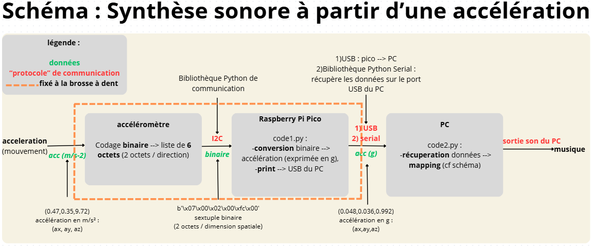
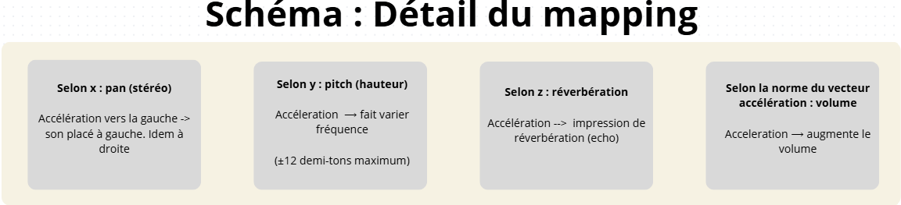
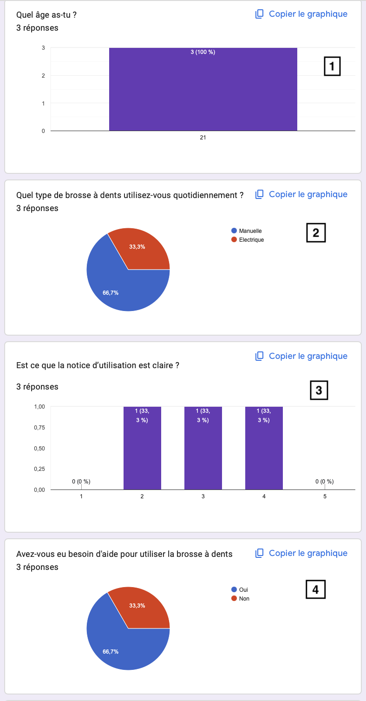
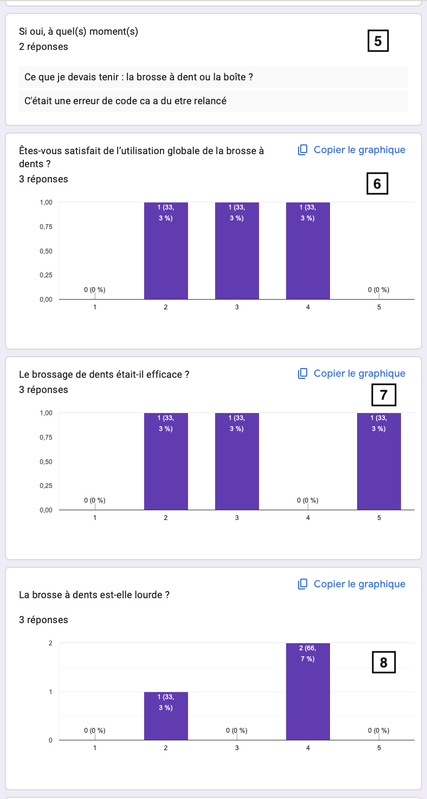
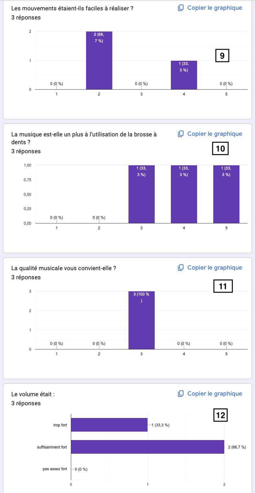
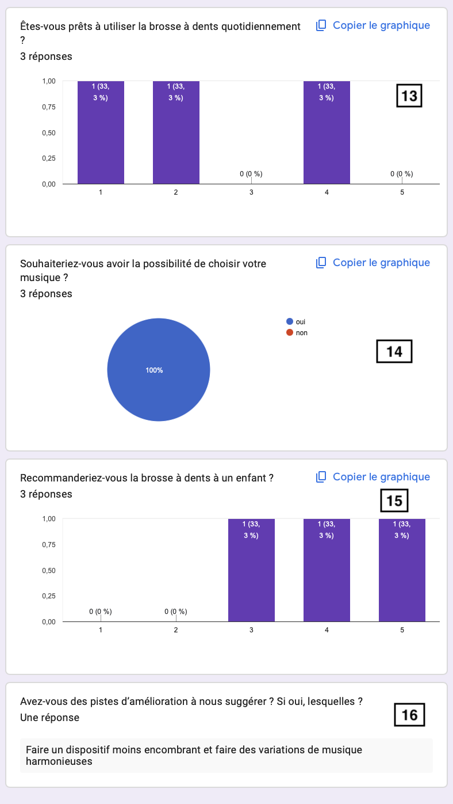

Ce projet est proposé annuellement aux 1A de l’ENSC par Maxime Poret, spécialiste en informatique sonore, dans le but d’éveiller les étudiants ingénieurs à la conception d’instruments informatiques musicaux.
Inspirés par le jeu Mimizaur, nous avons créé une brosse à dents connectée pour rendre le brossage ludique. L'idée est d'utiliser une brosse à dents comme interface musicale où les mouvements contrôlent directement les sons générés.
Haut-parleur : essai de création d'un filtre mais cela n'a pas fonctionné.
Code :
Un premier programme exécuté sur le pico permettant de lire les données de l’accéléromètre
Un second exécuté sur PC récupérant en temps réel les données d’accélération (tuple de 3 valeurs symbolisant les 3 directions) via un câble USB et utilisant ces données afin d'appliquer des effets sonores à une musique (cf mapping).

Voici un aperçu du mapping (i.e, du processus de conversion de données numériques en données sonores) :

Tests utilisateurs :
Nous avons fait passer des tests utilisateurs à 3 personnes. Les tests portent sur l'utilisation de la brosse à dents (mise en marche du dispositif et simulation d'un brossage de dents) mais nous n'avons pas pu faire passer le test avec l'interface Web par manque de temps.
Les tests comportent une phase d'observation puis un questionnaire (dont la majorité des questions demande une réponse basée sur une échelle de Likert allant de 1 à 5 où 5 correspond à "beaucoup").
Voici les résultats :
Concernant la prise en main de la brosse à dents, 2 personnes ont eu besoin d'aide pour démarrer le dispositif et la moyenne est de 3/5. (cf. graphique 4)
Concernant l'utilisation, la satisfaction globale de la brosse à dents s'élève à 3/5. (cf. graphique 6)
Concernant la musique, en moyenne, les utilisateurs jugent que la musique est un plus pour l'utilisation de la brosse à dents. (cf. graphique 10)




Site web utilisateur
Nous avons réalisé un site web conçu pour l'utilisateur. Sur celui-ci, il peut sélectionner la musique qu'il souhaite en fonction de son humeur.
Le projet nous a permis de développer des compétences en gestion de projet, comme la coordination au sein de groupe mais aussi avec notre tuteur/client.
Nous avons également dû nous adapter aux différents obstacles que nous avons rencontrés, notamment au niveau du code et du matériel.
Sur le plan technique, nous avons dû apprendre à utiliser différents outils auxquels nous n'étions pas familiers (ex : imprimantes 3D, bibliothèques audio Python).
La pluridisciplinarité du projet nous a poussé à découvrir diverses techniques tout en développant notre créativité artistique.
Pour se plier aux exigences environnementales du Plan Vert et de la loi Grenelle, nous avons pris plusieurs mesures pour réduire l'empreinte écologique de notre projet et du site.
Nous avons optimisé la taille des images pour réduire la consommation énergétique liée au chargement et tranfert des données.
Notre prototype a été conçu de sorte que le remplacement des pièces soit possible, ainsi si un composant ne fonctionne plus, il ne sera pas nécessaire de changer l'intégralité du dispositif.
Sur le plan des enjeux sociaux, nous avons réalisé une interface Web respectant les critères d'accessibilité, permettant ainsi à l'ensemble des utilisateurs de naviguer sans obstacle. De plus, l'ensemble de notre projet s'inscrit dans une logique d'inclusion et d'utilité sociale car le dispositif est d'abord destiné aux enfants, dans le but de les encourager à se brosser les dents plus régulièrement et en respectant le temps recommandé par le personnel de santé.
Malgré le travail effectué tout au long de l'année, de nombreuses pistes d'améliorations sont encore envisagées.
En effet, notre prototype peut encore être amélioré sur ses aspects fonctionnels et esthétiques.
La prise en main reste tout de même difficile et nous doutons de l'utilisation régulière d'un tel dispositif. Nous avons fait le choix d'un dispositif plutôt gros qui s'adapte à toutes les brosses à dents plutôt qu'un dispositif qui soit bien maniable.
Egalement, pour assurer l'étanchéité, nous avons utilisé du PLA. Toutefois, notre manque de budget nous a empeché d'utiliser le même fil pour toute notre boîte. Aussi, nous avons placé un ballon sur le dessus de la boîte pour empecher l'eau de pénétrer à l'interieur du dipositif.
Pour éviter cela, il serait pertinent d'utiliser du caoutchouc entourant entièrement notre dispositif sur le dessus. De cette manière, la différence de couleur ne se verrait pas et l'aspect "brouillon" du projet à cause du ballon ne serait plus un problème.